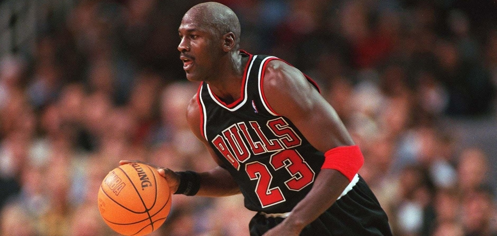

LINHA AIR JORDAN
⠀⠀⠀⠀Após 1 ano de contrato da Nike com Michael Jordan e por pedido da marca o
designer Peeter Moore criou o modelo Air Jordan 1.
⠀⠀⠀⠀O tênis era personalizado
e atendia às exigências do que Jordan gostava em um tênis: ele queria um modelo
que encaixasse no formato do seu pé com facilidade.
⠀⠀⠀⠀O resultado foi o tênis de
cano longo nas cores do Chicago Bulls.
